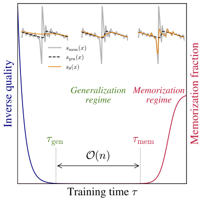

Why Diffusion Models Don’t Memorize: The Role of Implicit Dynamical Regularization in Training
NeurIPS 2025 Oral Best Paper
In this work, we investigate the role of the training dynamics in the transition from generalization to memorization in Diffusion Models. Through extensive experiments and theoretical analysis, we identify two distinct timescales: an early time $\tau_\mathrm{gen}$ at which models begin to generate high-quality samples, and a later time $\tau_\mathrm{mem}$ beyond which memorization emerges. Crucially, we find that $\tau_\mathrm{mem}$ increases linearly with the training set size $n$, while $\tau_\mathrm{gen}$ remains constant. This creates a growing window of training times with $n$ where models generalize effectively, despite showing strong memorization if training continues beyond it. It is only when $n$ becomes larger than a model-dependent threshold that overfitting disappears at infinite training times. These findings reveal a form of implicit dynamical regularization in the training dynamics, which allow to avoid memorization even in highly overparameterized settings.
BibTeX
@inproceedings{
bonnaire2026why,
title={Why Diffusion Models Don{\textquoteright}t Memorize: The Role of Implicit Dynamical Regularization in Training},
author={Tony Bonnaire and Rapha{\"e}l Urfin and Giulio Biroli and Marc Mezard},
booktitle={The Thirty-ninth Annual Conference on Neural Information Processing Systems},
year={2026},
url={https://openreview.net/forum?id=BSZqpqgqM0}
}